Introduction
The fdars package provides convenient
plot() and autoplot() methods for functional
data objects. However, for publication-quality figures or specialized
visualizations, you may need more control. This vignette shows how to
create fully customizable plots using ggplot2 directly.
Understanding the fdata Structure
An fdata object contains:
-
data: Matrix of size[n, m]where n is the number of curves and m is the number of evaluation points -
argvals: Vector of length m with the evaluation points (time/domain values) -
id: Character vector of curve identifiers -
metadata: Optional data frame with covariates
# Create example data
set.seed(42)
n <- 30
m <- 100
t_grid <- seq(0, 2*pi, length.out = m)
# Generate curves from two groups
X <- matrix(0, n, m)
groups <- rep(c("Treatment", "Control"), each = n/2)
for (i in 1:n) {
if (groups[i] == "Treatment") {
X[i, ] <- sin(t_grid) + 0.5 + rnorm(m, sd = 0.2)
} else {
X[i, ] <- sin(t_grid) + rnorm(m, sd = 0.2)
}
}
# Create fdata with metadata
meta <- data.frame(
group = groups,
age = runif(n, 20, 60),
response = rnorm(n)
)
fd <- fdata(X, argvals = t_grid,
id = paste0("subject_", 1:n),
metadata = meta,
names = list(main = "Example Data",
xlab = "Time (s)",
ylab = "Signal"))
# Inspect the structure
str(fd, max.level = 1)
#> List of 7
#> $ data : num [1:30, 1:100] 0.7742 0.7402 0.0998 0.4991 0.767 ...
#> $ argvals : num [1:100] 0 0.0635 0.1269 0.1904 0.2539 ...
#> $ rangeval: num [1:2] 0 6.28
#> $ names :List of 3
#> $ fdata2d : logi FALSE
#> $ id : chr [1:30] "subject_1" "subject_2" "subject_3" "subject_4" ...
#> $ metadata:'data.frame': 30 obs. of 3 variables:
#> - attr(*, "class")= chr "fdata"Converting fdata to Long Format
The key to custom plotting is converting the wide matrix format to a long (tidy) format that ggplot2 expects.
# Function to convert fdata to long format
fdata_to_long <- function(fd, include_metadata = TRUE) {
n <- nrow(fd$data)
m <- ncol(fd$data)
# Create base long-format data frame
df <- data.frame(
curve_id = rep(fd$id, each = m),
t = rep(fd$argvals, n),
value = as.vector(t(fd$data))
)
# Add metadata if requested and available
if (include_metadata && !is.null(fd$metadata)) {
# Expand metadata to match long format
meta_expanded <- fd$metadata[rep(seq_len(n), each = m), , drop = FALSE]
df <- cbind(df, meta_expanded)
rownames(df) <- NULL
}
df
}
# Convert our data
df_long <- fdata_to_long(fd)
head(df_long)
#> curve_id t value group age response
#> 1 subject_1 0.00000000 0.7741917 Treatment 29.85853 -1.11855
#> 2 subject_1 0.06346652 0.4504843 Treatment 29.85853 -1.11855
#> 3 subject_1 0.12693304 0.6992181 Treatment 29.85853 -1.11855
#> 4 subject_1 0.19039955 0.8158238 Treatment 29.85853 -1.11855
#> 5 subject_1 0.25386607 0.8320017 Treatment 29.85853 -1.11855
#> 6 subject_1 0.31733259 0.7908085 Treatment 29.85853 -1.11855Basic Custom Plots
Simple Spaghetti Plot
ggplot(df_long, aes(x = t, y = value, group = curve_id)) +
geom_line(alpha = 0.5, linewidth = 0.3) +
labs(x = "Time (s)", y = "Signal", title = "All Curves") +
theme_minimal()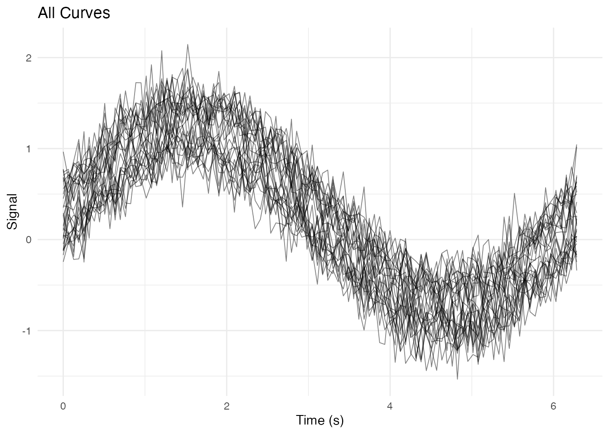
Coloring by Group
ggplot(df_long, aes(x = t, y = value, group = curve_id, color = group)) +
geom_line(alpha = 0.6, linewidth = 0.4) +
scale_color_manual(values = c("Treatment" = "#E69F00", "Control" = "#56B4E9")) +
labs(x = "Time (s)", y = "Signal", color = "Group") +
theme_minimal() +
theme(legend.position = "top")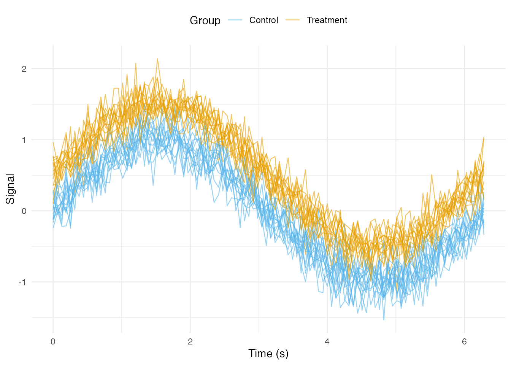
Coloring by Continuous Variable
ggplot(df_long, aes(x = t, y = value, group = curve_id, color = age)) +
geom_line(alpha = 0.7, linewidth = 0.4) +
scale_color_viridis_c(option = "plasma") +
labs(x = "Time (s)", y = "Signal", color = "Age") +
theme_minimal()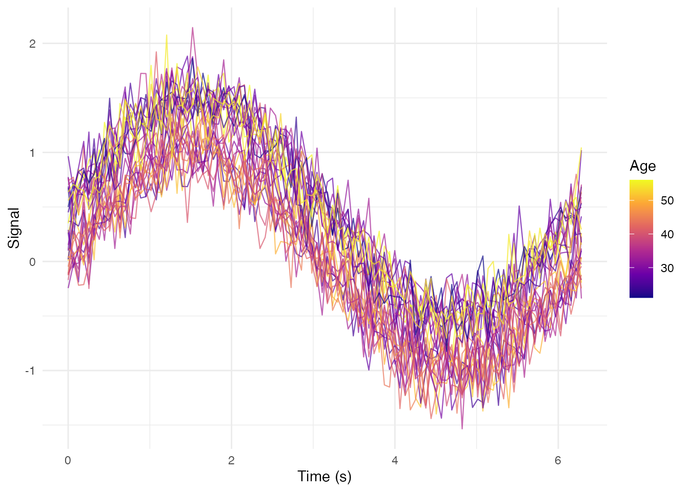
Adding Summary Statistics
Mean and Confidence Intervals by Group
# Compute group summaries
df_summary <- df_long %>%
group_by(group, t) %>%
summarise(
mean = mean(value),
sd = sd(value),
n = n(),
se = sd / sqrt(n),
ci_lower = mean - 1.96 * se,
ci_upper = mean + 1.96 * se,
.groups = "drop"
)
# Plot with ribbons and mean lines
ggplot() +
# Individual curves (faded)
geom_line(data = df_long,
aes(x = t, y = value, group = curve_id, color = group),
alpha = 0.2, linewidth = 0.3) +
# Confidence interval ribbons
geom_ribbon(data = df_summary,
aes(x = t, ymin = ci_lower, ymax = ci_upper, fill = group),
alpha = 0.3) +
# Mean lines
geom_line(data = df_summary,
aes(x = t, y = mean, color = group),
linewidth = 1.2) +
scale_color_manual(values = c("Treatment" = "#E69F00", "Control" = "#56B4E9")) +
scale_fill_manual(values = c("Treatment" = "#E69F00", "Control" = "#56B4E9")) +
labs(x = "Time (s)", y = "Signal",
title = "Group Means with 95% CI",
color = "Group", fill = "Group") +
theme_minimal() +
theme(legend.position = "top")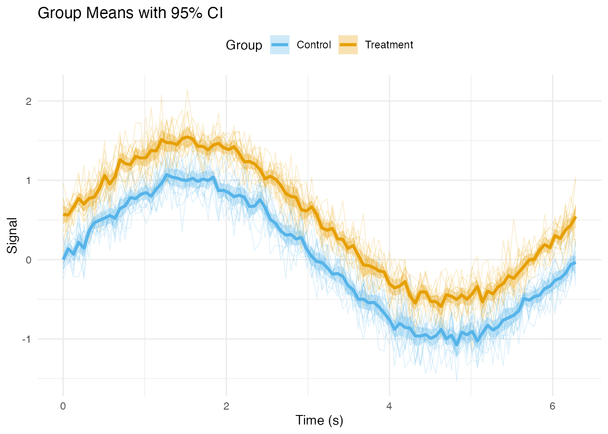
Median and Quantile Bands
df_quantiles <- df_long %>%
group_by(group, t) %>%
summarise(
median = median(value),
q25 = quantile(value, 0.25),
q75 = quantile(value, 0.75),
q10 = quantile(value, 0.10),
q90 = quantile(value, 0.90),
.groups = "drop"
)
ggplot(df_quantiles, aes(x = t)) +
# 10-90% band
geom_ribbon(aes(ymin = q10, ymax = q90, fill = group), alpha = 0.2) +
# 25-75% band (IQR)
geom_ribbon(aes(ymin = q25, ymax = q75, fill = group), alpha = 0.4) +
# Median line
geom_line(aes(y = median, color = group), linewidth = 1) +
scale_color_brewer(palette = "Set1") +
scale_fill_brewer(palette = "Set1") +
facet_wrap(~ group) +
labs(x = "Time (s)", y = "Signal",
title = "Median with IQR and 10-90% Bands") +
theme_minimal() +
theme(legend.position = "none")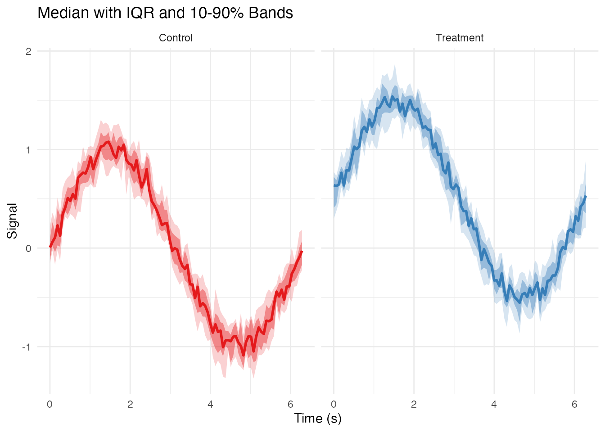
Highlighting Specific Curves
Highlighting Outliers
# Detect outliers using depth
depths <- depth.MBD(fd)
outlier_threshold <- quantile(depths, 0.1)
outlier_ids <- fd$id[depths < outlier_threshold]
# Add outlier flag to data
df_long$is_outlier <- df_long$curve_id %in% outlier_ids
ggplot(df_long, aes(x = t, y = value, group = curve_id)) +
# Non-outliers in gray
geom_line(data = filter(df_long, !is_outlier),
color = "gray70", alpha = 0.5, linewidth = 0.3) +
# Outliers in red
geom_line(data = filter(df_long, is_outlier),
color = "red", alpha = 0.8, linewidth = 0.6) +
labs(x = "Time (s)", y = "Signal",
title = "Outlier Curves Highlighted",
subtitle = paste(length(outlier_ids), "outliers detected")) +
theme_minimal()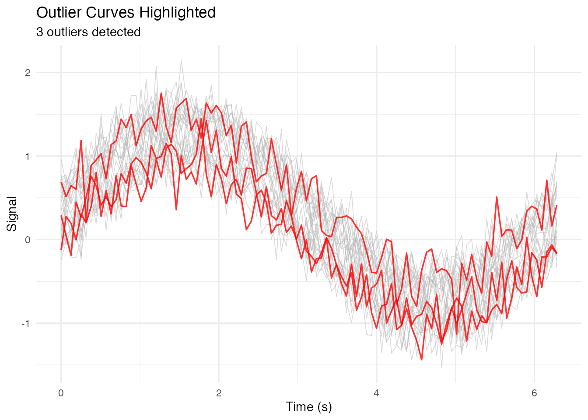
Highlighting a Subset with Labels
# Select specific curves to highlight
highlight_ids <- c("subject_1", "subject_15", "subject_30")
df_long$highlight <- df_long$curve_id %in% highlight_ids
# Get endpoint positions for labels
df_endpoints <- df_long %>%
filter(highlight) %>%
group_by(curve_id) %>%
filter(t == max(t))
ggplot(df_long, aes(x = t, y = value, group = curve_id)) +
geom_line(data = filter(df_long, !highlight),
color = "gray80", alpha = 0.5, linewidth = 0.3) +
geom_line(data = filter(df_long, highlight),
aes(color = curve_id), linewidth = 0.8) +
geom_text(data = df_endpoints,
aes(label = curve_id, color = curve_id),
hjust = -0.1, size = 3) +
scale_color_brewer(palette = "Dark2") +
coord_cartesian(xlim = c(0, max(t_grid) * 1.15)) +
labs(x = "Time (s)", y = "Signal") +
theme_minimal() +
theme(legend.position = "none")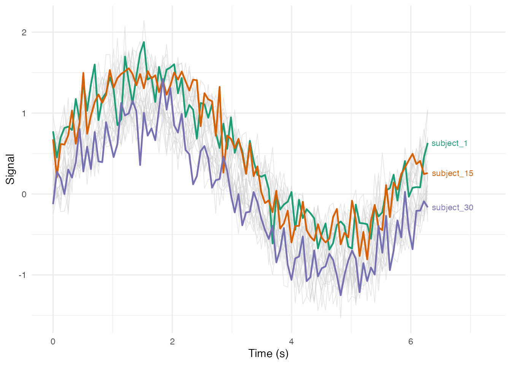
Faceted Plots
Facet by Group
ggplot(df_long, aes(x = t, y = value, group = curve_id)) +
geom_line(alpha = 0.5, linewidth = 0.3) +
facet_wrap(~ group, ncol = 2) +
labs(x = "Time (s)", y = "Signal") +
theme_bw()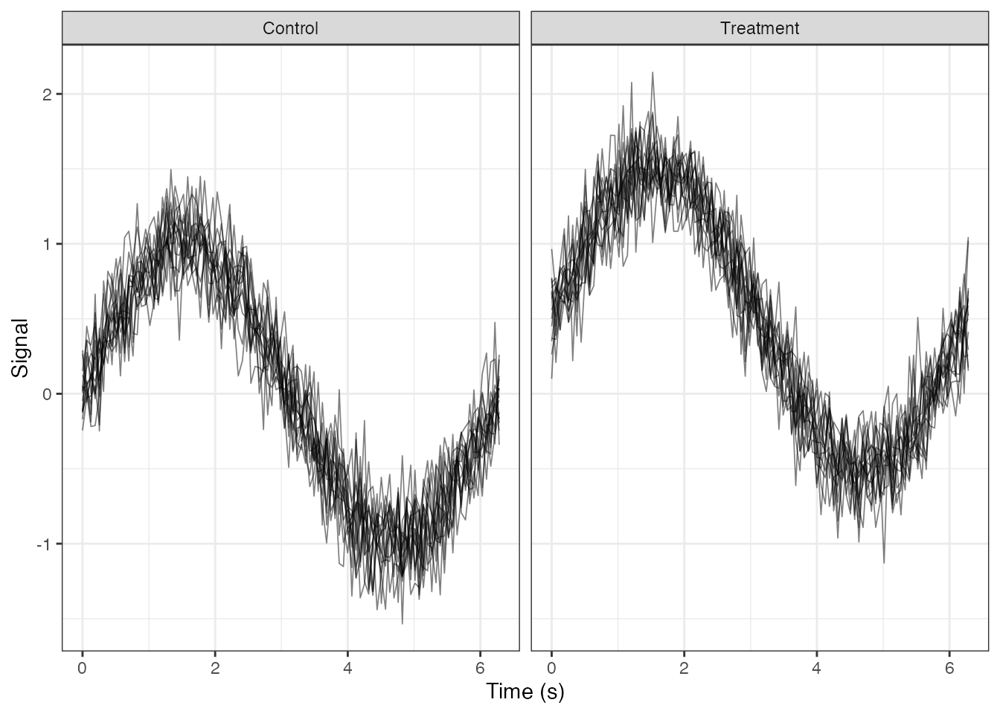 ### Facet by Binned Continuous Variable
# Create age bins
df_long$age_bin <- cut(df_long$age,
breaks = c(20, 35, 50, 65),
labels = c("Young (20-35)", "Middle (35-50)", "Senior (50-65)"))
ggplot(df_long, aes(x = t, y = value, group = curve_id, color = group)) +
geom_line(alpha = 0.6, linewidth = 0.4) +
facet_wrap(~ age_bin, nrow = 1) +
scale_color_brewer(palette = "Set1") +
labs(x = "Time (s)", y = "Signal", color = "Group") +
theme_minimal() +
theme(legend.position = "bottom")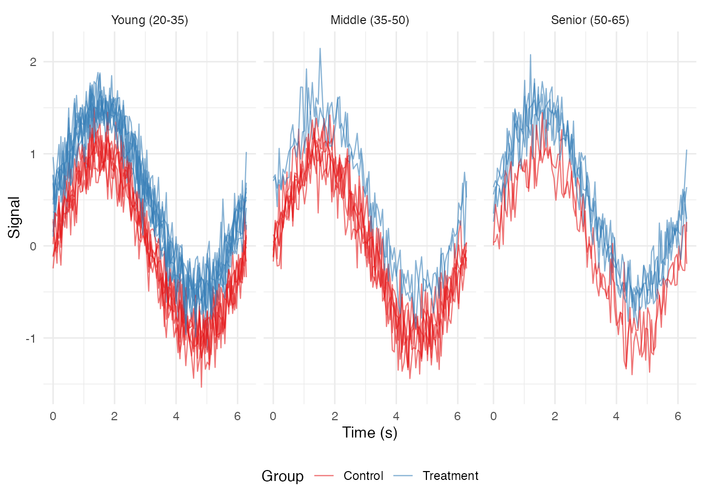
Small Multiples (Individual Curves)
# Show first 12 curves as small multiples
selected_ids <- fd$id[1:12]
df_subset <- filter(df_long, curve_id %in% selected_ids)
ggplot(df_subset, aes(x = t, y = value)) +
geom_line(color = "steelblue") +
facet_wrap(~ curve_id, ncol = 4, scales = "free_y") +
labs(x = "Time", y = "Signal") +
theme_minimal() +
theme(strip.text = element_text(size = 8))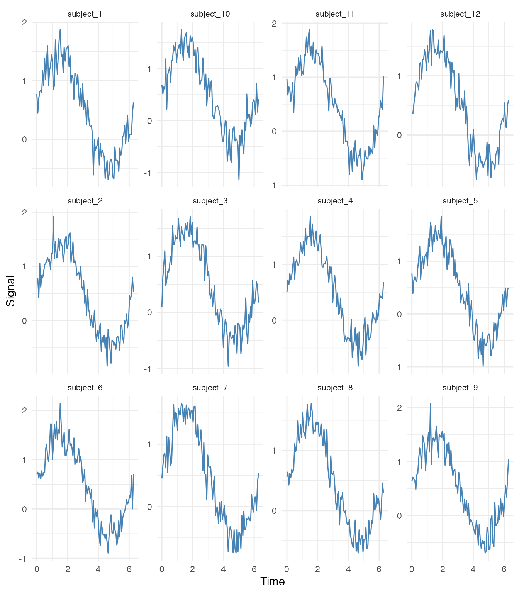
Advanced Visualizations
Rainbow Plot (Curves Colored by Index)
# Add curve index
curve_order <- match(df_long$curve_id, unique(df_long$curve_id))
df_long$curve_index <- curve_order
ggplot(df_long, aes(x = t, y = value, group = curve_id, color = curve_index)) +
geom_line(alpha = 0.7, linewidth = 0.4) +
scale_color_viridis_c(option = "turbo") +
labs(x = "Time (s)", y = "Signal", color = "Curve #") +
theme_minimal()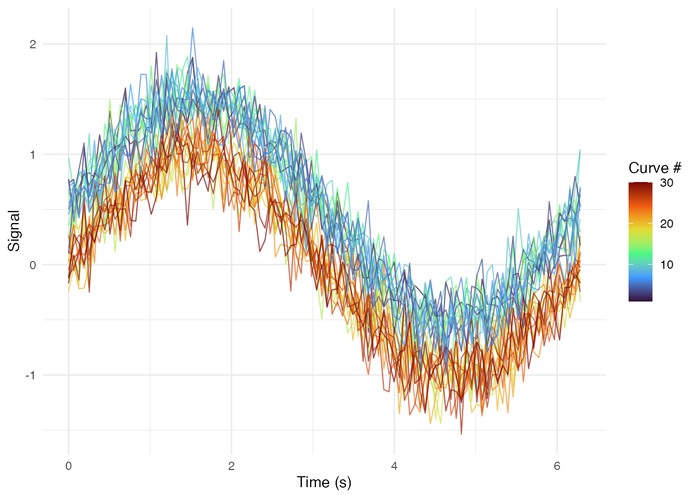
Phase Plane Plot (Value vs Derivative)
# Compute derivatives
fd_deriv <- deriv(fd)
df_deriv <- fdata_to_long(fd_deriv)
names(df_deriv)[names(df_deriv) == "value"] <- "velocity"
# Merge with original values
df_phase <- df_long %>%
select(curve_id, t, value, group) %>%
left_join(select(df_deriv, curve_id, t, velocity),
by = c("curve_id", "t"))
ggplot(df_phase, aes(x = value, y = velocity, group = curve_id, color = group)) +
geom_path(alpha = 0.5, linewidth = 0.3) +
scale_color_brewer(palette = "Set1") +
labs(x = "Signal Value", y = "Signal Velocity (derivative)",
title = "Phase Plane Plot") +
theme_minimal() +
coord_equal()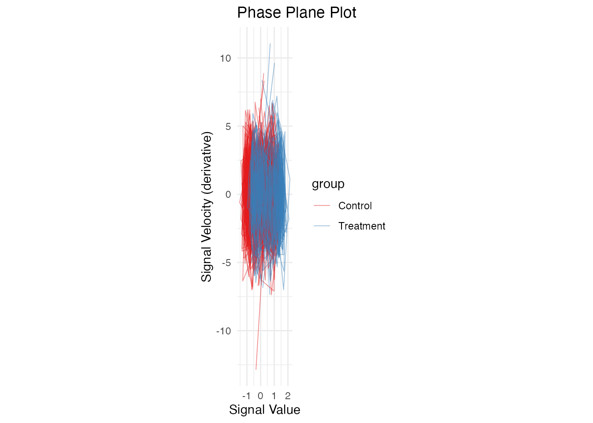
Functional Boxplot Components
# Get functional boxplot data
fbp <- boxplot(fd)
# Extract components manually for custom plotting
median_curve <- fd$data[fbp$median, ]
central_curves <- fd$data[fbp$central, ]
outlier_curves <- if (length(fbp$outliers) > 0) fd$data[fbp$outliers, , drop = FALSE] else NULL
# Compute envelopes
env_lower <- apply(central_curves, 2, min)
env_upper <- apply(central_curves, 2, max)
# Create custom plot
df_envelope <- data.frame(
t = fd$argvals,
lower = env_lower,
upper = env_upper,
median = median_curve
)
p <- ggplot() +
# Central envelope
geom_ribbon(data = df_envelope,
aes(x = t, ymin = lower, ymax = upper),
fill = "steelblue", alpha = 0.4) +
# Median curve
geom_line(data = df_envelope,
aes(x = t, y = median),
color = "navy", linewidth = 1.2) +
labs(x = "Time (s)", y = "Signal",
title = "Custom Functional Boxplot") +
theme_minimal()
# Add outliers if present
if (!is.null(outlier_curves)) {
df_outliers <- data.frame(
curve_id = rep(fbp$outliers, each = m),
t = rep(fd$argvals, length(fbp$outliers)),
value = as.vector(t(outlier_curves))
)
p <- p + geom_line(data = df_outliers,
aes(x = t, y = value, group = curve_id),
color = "red", alpha = 0.7, linewidth = 0.5)
}
p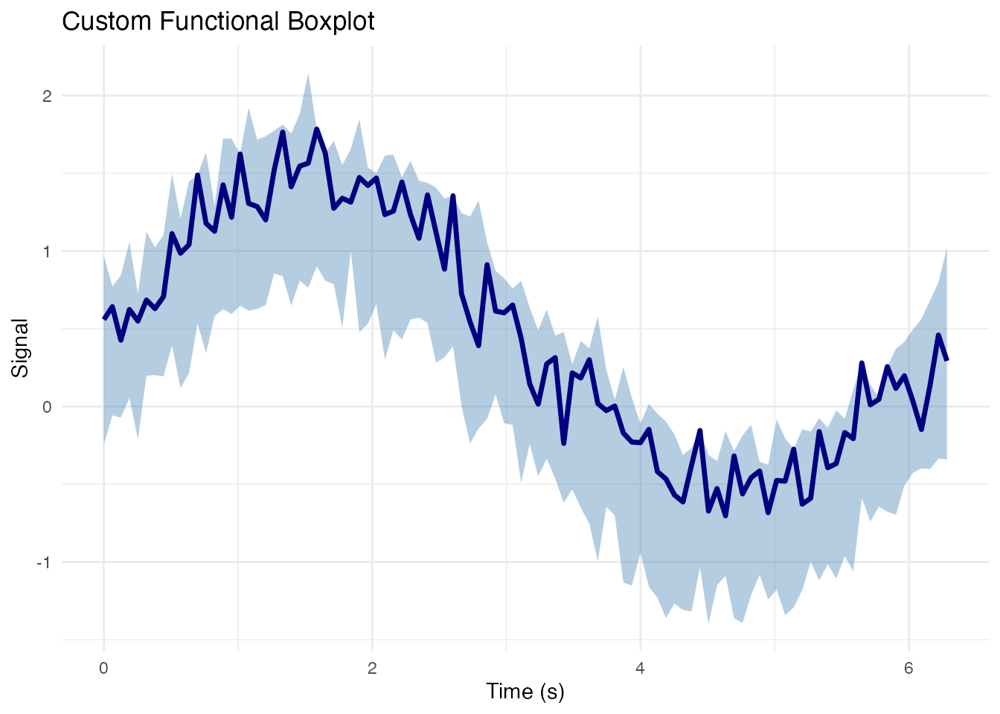
Heatmap Representation
# Order curves by depth for better visualization
depth_order <- order(depths, decreasing = TRUE)
df_long$curve_rank <- match(df_long$curve_id, fd$id[depth_order])
ggplot(df_long, aes(x = t, y = curve_rank, fill = value)) +
geom_tile() +
scale_fill_viridis_c(option = "magma") +
scale_y_reverse() +
labs(x = "Time (s)", y = "Curve (ordered by depth)",
fill = "Value",
title = "Heatmap of Functional Data") +
theme_minimal()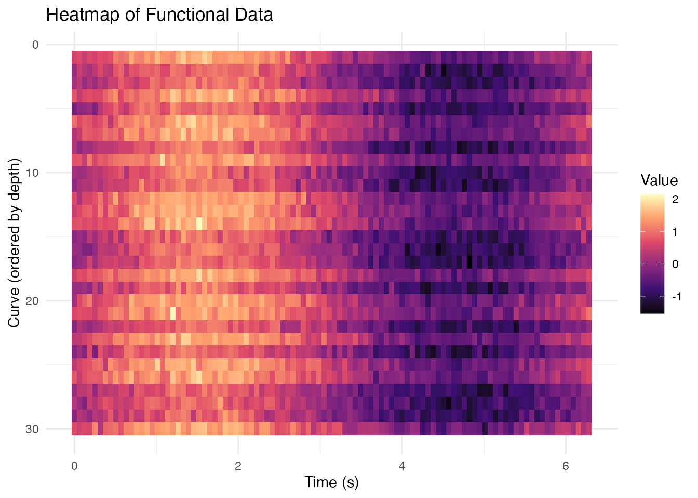
Combining with Other ggplot2 Extensions
Adding Annotations
# Find peaks for each curve
df_peaks <- df_long %>%
group_by(curve_id) %>%
slice_max(value, n = 1) %>%
ungroup()
ggplot(df_long, aes(x = t, y = value, group = curve_id)) +
geom_line(alpha = 0.3, linewidth = 0.3, color = "gray50") +
geom_point(data = df_peaks, aes(color = group), size = 1.5, alpha = 0.7) +
scale_color_brewer(palette = "Set1") +
labs(x = "Time (s)", y = "Signal",
title = "Peak Locations by Group",
color = "Group") +
theme_minimal()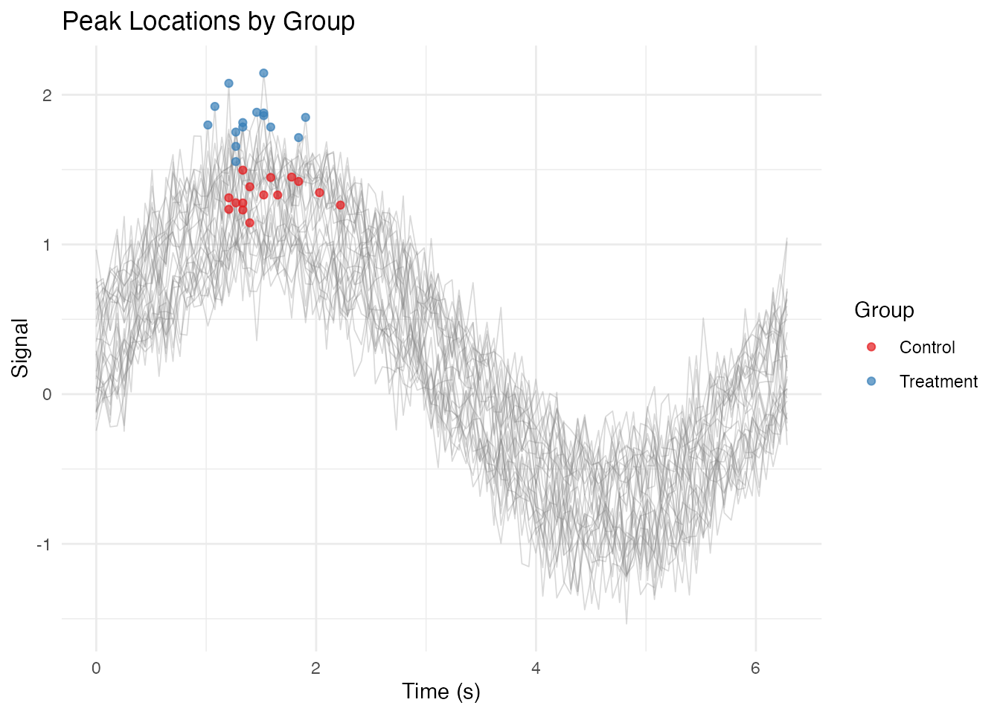
Using ggforce for Hulls
# If ggforce is available
if (requireNamespace("ggforce", quietly = TRUE)) {
# Compute FPCA scores for 2D representation
pc <- fdata2pc(fd, ncomp = 2)
df_scores <- data.frame(
PC1 = pc$x[, 1],
PC2 = pc$x[, 2],
group = fd$metadata$group
)
ggplot(df_scores, aes(x = PC1, y = PC2, color = group, fill = group)) +
ggforce::geom_mark_ellipse(alpha = 0.1) +
geom_point(size = 2) +
scale_color_brewer(palette = "Set1") +
scale_fill_brewer(palette = "Set1") +
labs(title = "FPCA Scores with Group Ellipses") +
theme_minimal()
}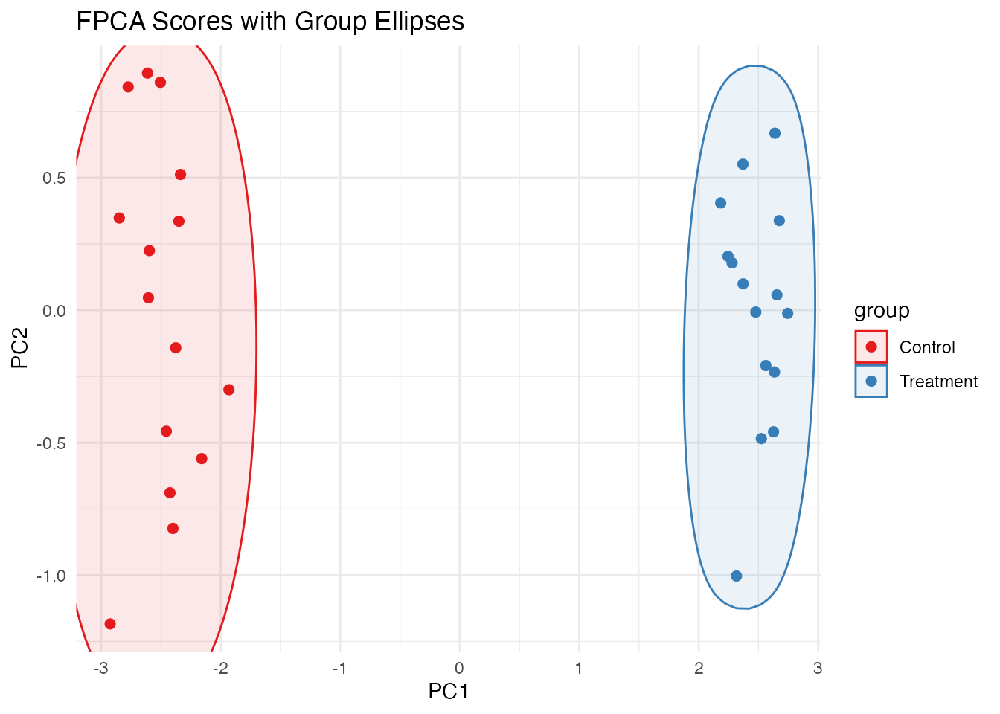
Theming for Publication
# Define a publication-ready theme
theme_publication <- function(base_size = 11) {
theme_minimal(base_size = base_size) %+replace%
theme(
panel.grid.minor = element_blank(),
panel.grid.major = element_line(color = "gray90", linewidth = 0.3),
axis.line = element_line(color = "black", linewidth = 0.4),
axis.ticks = element_line(color = "black", linewidth = 0.3),
legend.position = "bottom",
legend.key.size = unit(0.8, "lines"),
plot.title = element_text(face = "bold", hjust = 0),
strip.background = element_rect(fill = "gray95", color = NA)
)
}
# Publication-quality plot
ggplot(df_summary, aes(x = t, color = group, fill = group)) +
geom_ribbon(aes(ymin = ci_lower, ymax = ci_upper), alpha = 0.2, color = NA) +
geom_line(aes(y = mean), linewidth = 0.8) +
scale_color_manual(values = c("Treatment" = "#D55E00", "Control" = "#0072B2"),
labels = c("Treatment", "Control")) +
scale_fill_manual(values = c("Treatment" = "#D55E00", "Control" = "#0072B2"),
labels = c("Treatment", "Control")) +
labs(x = "Time (s)", y = "Signal (a.u.)",
color = NULL, fill = NULL) +
theme_publication() +
guides(color = guide_legend(override.aes = list(linewidth = 2)))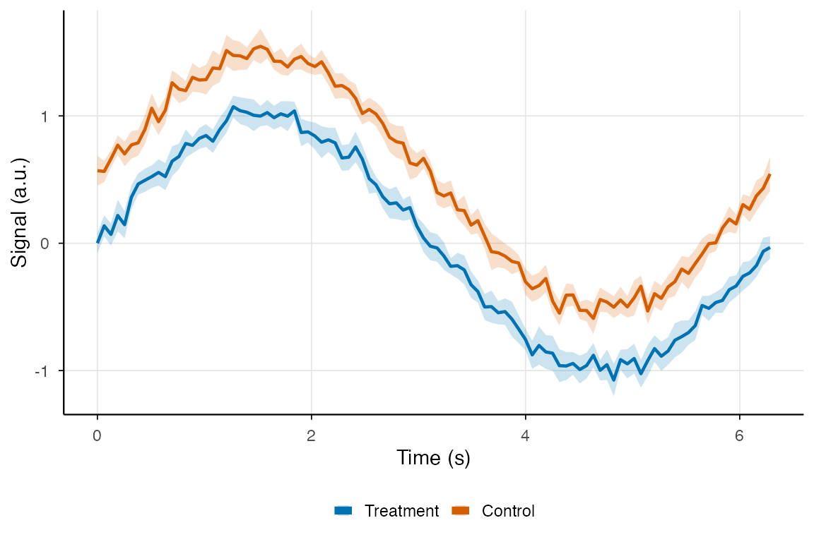
Saving Plots
# Create your plot
p <- ggplot(df_summary, aes(x = t, y = mean, color = group)) +
geom_line(linewidth = 1) +
theme_minimal()
# Save as PNG (for web/presentations)
ggsave("functional_plot.png", p, width = 7, height = 5, dpi = 300)
# Save as PDF (for publications)
ggsave("functional_plot.pdf", p, width = 7, height = 5)
# Save as SVG (for editing in Illustrator/Inkscape)
ggsave("functional_plot.svg", p, width = 7, height = 5)Summary: fdata to ggplot2 Workflow
-
Convert to long format: Use the
fdata_to_long()function shown above - Add metadata: Include covariates for coloring/faceting
- Compute summaries: Use dplyr for means, CIs, quantiles
- Build layers: Start with individual curves, add summaries on top
- Customize appearance: Apply themes, colors, labels
-
Export: Use
ggsave()with appropriate format and resolution
# Complete workflow example
fd %>%
fdata_to_long() %>%
ggplot(aes(x = t, y = value, group = curve_id, color = group)) +
geom_line(alpha = 0.5) +
stat_summary(aes(group = group), fun = mean, geom = "line", linewidth = 1.5) +
scale_color_brewer(palette = "Set1") +
labs(x = "Time", y = "Value") +
theme_minimal()